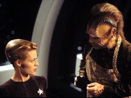
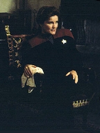
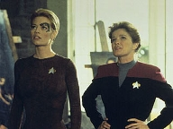
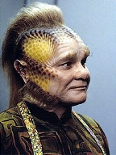
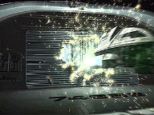
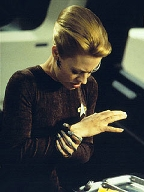

| MANCHETE
DO EPISÓDIO
Seven
decide retornar à Coletividade
Episódio
anterior | Próximo episódio Sinopse:
Data Estelar: Desconhecida.  Enquanto
conversa com a capitã no holodeck, Seven começa a ter flashbacks
envolvendo os Borgs e um grande pássaro negro. O Doutor deduz que seja um tipo
de estresse pós-traumático. Ao analisar melhor seus exames, sugere que
ela comece a ingerir alimentos sólidos, indispensáveis à fisionomia humana.
No Refeitório, Seven tem novas visões. Subitamente, implantes Borgs saltam de
sua pele e ela passa a demonstrar o comportamento de um zangão.
Nesse meio-tempo, Janeway conduz difíceis negociações
com representantes dos B'omar para passagem através de seu território. Embora
os tripulantes se alarmem com as ações de Seven e tentem detê-la, são
incapazes de impedi-la de deixar a Voyager. Ao se transportar para uma nave
auxiliar, ela mascara sua assinatura de dobra espacial e traça um curso para o
espaço B'omar.
O Doutor conclui que as nanossondas Borgs dormentes no
organismo de Seven foram por algum motivo reativadas. Os B'omar proíbem a
Voyager de entrar em seu território para procurá-la, mas Tom e Tuvok conseguem
evadir a grade de perímetro alienígena em uma nave auxiliar. Quando a dupla
encontra Seven, Tuvok se transporta para sua nave, sendo, em seguida, contido
por um campo de força. O Vulcano pergunta-lhe sobre as razões que a levaram a
deixar a Voyager. Seven explica que está respondendo a um chamado da
Coletividade, embora Tuvok ressalte que não há naves Borgs naquela região.
 Seven traça o sinal a uma lua próxima e se preparar para
transportar à superfície. Tuvok pede para acompanhá-la, agora convencido de
que está enganada. Nas coordenadas, eles encontram uma antiga nave da
Federação parcialmente assimilada há cerca de 20 anos. É a Raven, o veículo
dos Hansen, pais de Seven. Um equipamento modificado pelos Borgs ainda está
parcialmente ativo, incluindo o sinal que a fez retornar. Quando Seven confronta
as memórias reprimidas de sua assimilação, a dupla é surpreendida por um
ataque de naves B'omar. Ao fugir dos destroços, são transportados por Tom e
conseguem voltar em segurança para a Voyager
Comentários:
 Como era de se esperar, neste segmento o telespectador
volta a conhecer um pouco mais de Seven. Depois do inofensivo "Revultion",
"The Raven" vem para estabelecer o próximo passo na jornada da
ex-Borg pela redescoberta de sua humanidade. E é absolutamente lindo ver Jeri
Ryan em tela. A referência aqui não se restringe à sua aparência, mas à
forma como vem conduzindo a personagem. Já no teaser ela rouba a cena,
quando Janeway tenta encorajá-la a explorar a imaginação através da arte e
literatura. Seven não consegue enxergar o propósito da atividade. Não há
razões pragmáticas aparentes. Como Borg, eram-lhe designadas apenas tarefas
práticas. Finda a instrução da Coletividade, vinham outras. Agora, a ex-zangão se vê
"perdendo" tempo com momentos de relaxamento. "Não é eficiente",
nota.
Depois, mais humor. Neelix tenta ensinar-lhe o conceito de
ingerir alimentos. Ela não sabe nem ao menos sentar-se à mesa, quanto mais
usar o garfo, mastigar a comida e engolir. De algum modo, essa seqüência de
aprendizados funciona para o fã. Não apenas por se tratar de uma nova
personagem na série, mas porque faltam, em Voyager, essas situações
humanas corriqueiras, que há décadas vêm sustentando a franquia.
Alguns outros elementos da trama também funcionam. Seven
começa a ter alucinações perturbadoras. Vê imagens -- um pássaro negro, Borgs
a perseguindo --, as quais acusam que algo está errado. Mas de repente, por
razões que fogem à lógica, os implantes cibernéticos da ex-zangão voltam a
"brotar" e seu "módulo Borg" é ativado. Ela rouba uma nave
auxiliar, foge da Voyager e ruma para o espaço B'omar.
 O sarcasmo dos alienígenas vem bem a calhar. Também o
telespectador questiona a competência da capitã. Por que os fugitivos sempre
conseguem andar incólumes pelos corredores, pegar naves auxiliares e sair com
facilidade? Há Seska, em "State of Flux",
Chakotay e os Kazons em "Maneuvers", o
robô em "Prototype", Paris em "Threshold",
os Ferengi (!) em "False Profits", um
humano do século 20 (!) em "Future's End",
Kes em "Warlord" e o Doutor em "Darkling".
O que explica a incapacidade das equipes de segurança em impedir tantas
fugas?
Aqui, tentam explicar com a imbatível tecnologia Borg.
Mas os roteiristas falham em determinar como os escudos de Seven já levantam
adaptados aos disparos. E mais: se a ex-zangão pode instalar defletores tão
poderosos na nave auxiliar, por que nunca o fez na Voyager? Seria uma
explicação para o brilho do casco a toda semana. O fã, ao menos, seria
poupado de imaginar que Janeway designa Harry e Neelix para limpar o exterior da
nave ao final de cada batalha.
Voltando à narrativa, Seven pilota a nave auxiliar
através da porta do hangar e escapa, visando seguir um misterioso sinal de
localização Borg. Embora improvável, a trama agrada ao menos visualmente.
Os alienígenas aparecem como mero clichê, para forçar
uma situação de confronto e solucionar artificialmente os problemas criados na
história. O dilema suscitado ante às restrições impostas pelos B'omar
deveria ter desaparecido quando a tripulação descobre que não conseguirá os
três meses de "economia" na viagem. Fica logo claro que as
negociações não são o mais importante. A raça existe apenas para se apresentar
como ameaça a Seven, que viola seu território.
 O roteiro parece melhorar quando Tuvok e Paris partem em
outra nave auxiliar atrás da ex-zangão. O Vulcano se transporta e Seven o
torna seu prisioneiro. Depois, ele usa de pura lógica para convencê-la
do que está acontecendo. Quando a dupla desce na colônia B'omar, encontra são
os destroços da nave estelar Raven, da Federação.
E aqui começam os melhores momentos dramáticos do segmento.
Seven revive seus momentos finais como humana,
antes da assimilação. Os flashbacks revelam imagens fortes, em particular a
de dois zangões Borgs alcançando a criança assustada. A atuação de Ryan,
novamente, chama a atenção, sobretudo no momento em que a personagem chama
pelos pais e se esconte debaixo de um anteparo. Ali, há vinte anos, Annika
Hansen deixava de existir; surgia Seven of Nine. Agora, em reviravolta
simbólica, ela redescobre o passado, em meio à tentativa de voltar a ser
humana.
A dramaticidade é interrompida pelos
desnecessários -- e totalmente dispensáveis -- B'omar, que disparam contra a
superfície, atingindo os destroços da Raven. Voyager volta às suas
raízes: a ação.
 Infelizmente,
o episódio peca no trecho de maior relevância e qualidade: a descoberta da
antiga nave dos Hansen. É a reafirmação da "teoria da
coincidência" -- aquele instrumento que os roteiristas usam para
permitir que a Voyager convenientemente continue encontrando elementos do
Quadrante Alfa na vastidão do Quadrante Delta, apesar das probabilidades
ínfimas. Quais as chances de a tripulação encontrar os destroços da Raven?
E mais: Quais as chances de eles estarem na rota direta da Voyager para casa?
O mesmo vale para "The 37's", "Tattoo",
"Dreadnought", "False
Profits", "Unity" e "Distant
Origin".
E, é claro: o que seria de um episódio de Voyager
sem a perda de uma nave auxiliar? Tudo leva a crer que a nave de Seven fica
para trás na corrida contra os B'omar. Lá se vai a quarta, em cinco
episódios na temporada!
O jeito é atentar aos fatos positivos. Apesar
das falhas, "The Raven"
agrada visualmente e consegue entreter -- principalmente no quesito da
caracterização e do "insight" sobre o passado de Seven.
Nota dez para Jeri Ryan. Dois para os B'omar, fazendo jus ao seu sarcasmo.
Citações:
Janeway - "It's not difficult as it
looks. The first rule is: don't be afraid of the clay."
("Não é tão difícil quanto parece. A primeira regra é: não tenha medo
da argila.")
Seven - "I fear nothing."
("Eu
não tenho medo de nada.") Seven
- "This activity is truly unproductive. The end result has no use, no
necessary task has been accomplished. Time has been expended. Nothing more."
("Esta atividade é verdadeiramente improdutiva. O resultado final não tem
utilidade, nenhuma tarefa necessária foi cumprida. Tempo foi perdido. Nada
mais.") Janeway - "It
helps my own effiency to forget about Voyager for a while."
("Ajuda a minha própria eficiência esquecer a Voyager às vezes.") Doutor
- "Your digestive system is fully functional. Now is as good a time as
any for you to begin taking solid and liquid nutrients."
("Seu sistema digestivo está inteiramente funcional. Agora é a melhor
hora para você começar a ingerir nutrientes sólidos e líquidos.")
Seven - "Oral consumption is inefficient."
("Consumo oral é ineficiente.")
Doutor
- "And unnecessary, if you are lucky enough to be a hologram... but your
human fisiology requires it. I'll draw up a list of nutritional requirements.
Take it to Mr. Neelix in the Mess Hall. I hesitate to inflict his cooking on
you, but it will have to do."
("E desnecessário, se você tiver a sorte de ser um holograma... mas a sua
fisiologia humana precisa disso. Vou compilar uma lista de requerimentos
nutricionais. Leve-a para o Sr. Neelix no Refeitório. Estou hesitante em
infligir a culinária dele em você, mas vai ter que servir.")
Trivia:
 A cena da nave auxiliar de Seven foi reciclada de outro episódio, tendo sido
usada como imagem-espelho da seqüência original. O número de registro da
Voyager, 74656, é visto ao contrário. O mesmo erro apareceu em "Maneuvers",
da segunda temporada.
A cena da nave auxiliar de Seven foi reciclada de outro episódio, tendo sido
usada como imagem-espelho da seqüência original. O número de registro da
Voyager, 74656, é visto ao contrário. O mesmo erro apareceu em "Maneuvers",
da segunda temporada.
Seven veste um novo figurino marrom, que restringe menos os movimentos da atriz
Jeri Ryan. A mudança também trouxe "alívio" a Robert Picardo
(Doutor), que revelou o desconforto da equipe nos sets por conta dos trajes
justos usados anteriormente.
O roteiro descreve os B'omar como "desconfiados, fastidiosos e evasivos, e
mais sarcásticos do que qualquer alienígena que já encontramos". Muitas
das falas sarcásticas foram cortadas na edição final.
Por enquanto, em 40 anos-luz de distância em torno da Voyager, nada de Borgs.
É estabelecido que Seven está a bordo de Voyager há dois meses.
Para os Borgs, os Talaxianos, raça de Neelix, é apenas conhecida como a
“Espécie 218”.
O registro da nave SS Raven é NAR-32450. Ficha
técnica: Direção de
LeVar Burton
Adaptação por Bryan Fuller
Escrito por Bryan Fuller e
Harry Doc Kloor
Exibido em 08/10/1997
Produção: 074 Elenco: Kate
Mulgrew como Kathryn Janeway
Robert Beltran como
Chakotay
Roxann Biggs-Dawson como B'Elanna Torres
Robert
Duncan McNeill como Tom Paris
Ethan Phillips como
Neelix
Robert Picardo como Doutor
Tim Russ
como Tuvok
Jeri Ryan como Seven of Nine
Garrett Wang como Harry Kim Elenco
convidado:
Richard J. Zobel, Jr. como Gauman
Mickey Cottrell como Dumah
David Anthony Marshall como Pai
Nikki Tyler como Mãe
Erica Lynne Bryan como Menina
Episódio
anterior | Próximo episódio
|